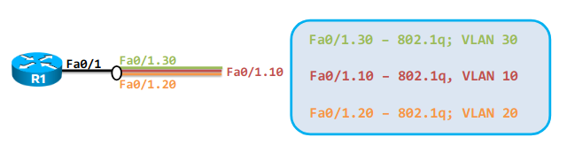
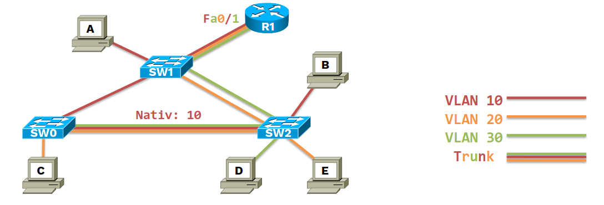
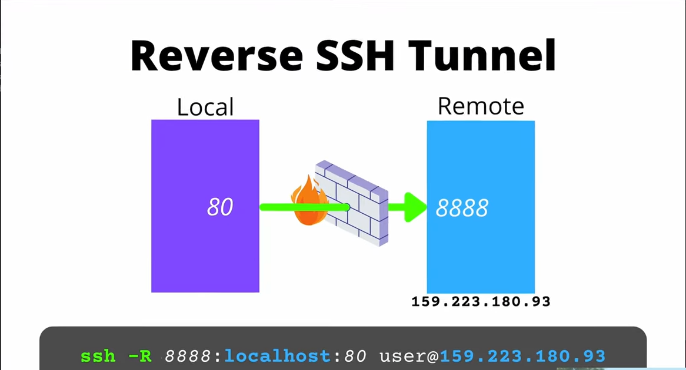

IP
TL;DR
Show/manipulate routing, devices, policy routing and tunnels.
Some subcommands such as address have their own usage documentation.
More information: https://www.manned.org/ip.8.
# List interfaces with detailed info:
ip address
# List interfaces with brief network layer info:
ip -brief address
# List interfaces with brief link layer info:
ip -brief link
# Display the routing table:
ip route
# Show neighbors (ARP table):
ip neighbour
# Make an interface up/down:
ip link set interface up|down
# Add/Delete an IP address to an interface:
ip addr add/del ip/mask dev interface
# Add a default route:
ip route add default via ip dev interface
IP sub commands
Sub commands:
ip link
TL;DR
Manage network interfaces.
More information: https://manned.org/ip-link.
# Show information about all network interfaces:
ip link
# Show information about a specific network interface:
ip link show <ethN>
# Bring a network interface up or down:
ip link set <ethN> <up|down>
# Give a meaningful name to a network interface:
ip link set <ethN> alias "LAN Interface"
# Change the MAC address of a network interface:
ip link set <ethN> address ff:ff:ff:ff:ff:ff
# Change the MTU size for a network interface to use jumbo frames:
ip link set <ethN> mtu 9000
Long and short version
| Long version | Short Version |
|---|---|
ip link | ip l or ip li |
ip neigbour
TL;DR
Neighbour/ARP tables management IP subcommand.
More information: https://manned.org/ip-neighbour.8.
# Display the neighbour/ARP table entries:
ip neighbour
# Remove entries in the neighbour table on device eth0:
sudo ip neighbour flush dev <eth0>
# Perform a neighbour lookup and return a neighbour entry:
ip neighbour get lookup_ip dev <eth0>
# Add or delete an ARP entry for the neighbour IP address to eth0:
sudo ip neighbour <add|del> <ip_address> lladdr <mac_address> dev <eth0> nud reachable
# Change or replace an ARP entry for the neighbour IP address to eth0:
sudo ip neighbour <change|replace> <ip_address> lladdr <new_mac_address> dev eth0
ip address
TL;DR
IP Address management subcommand.
More information: https://manned.org/ip-address.
# List network interfaces and their associated IP addresses:
ip address
# Filter to show only active network interfaces:
ip address show up
# Display information about a specific network interface:
ip address show dev <eth0>
# Add an IP address to a network interface:
ip address add <IP> dev <eth0>
# Remove an IP address from a network interface:
ip address delete <IP> dev <eth0>
# Delete all IP addresses in a given scope from a network interface:
ip address flush dev <eth0> scope <global|host|link>
Long and short versions
| Long Version | Short Version |
|---|---|
ip address | ip addr or ip a |
ip route
TL;DR
IP Routing table management subcommand.
More information: https://manned.org/ip-route.
# Display the routing table:
ip route show|list
# Add a default route using gateway forwarding:
sudo ip route add default via <gateway_ip>
# Add a default route using eth0:
sudo ip route add default dev <eth0>
# Add a static route:
sudo ip route add <destination_ip> via <gateway_ip> dev <eth0>
# Delete a static route:
sudo ip route del <destination_ip> dev <eth0>
# Change or replace a static route:
sudo ip route <change|replace destination_ip> via <gateway_ip> dev <eth0>
# Show which route will be used by the kernel to reach an IP address:
ip route get <destination_ip>
Long and short version
| Long version | Short version |
|---|---|
ip route | ip r |
Use of IP
RoaS (Router on a Stick)
 The link between a switch and a router can be configured as it follows:
- Switch: the interface will be trunk
- Router: the physical interfaces will be split into multiple logical sub-interfaces, one for each VLAN
RoaS allows inter-VLAN routing. The router configured as RoaS will be able to modify the VLAN tag in the packet and will be able to FORWARD packets from one VLAN to another (in the same LAN).
Steps:
- Create VLAN sub-interfaces
- Assign IP addresses
- Bring interfaces UP
Example of RoaS configuration on Linux:
# Split (fa01) interface in 3 (logical) sub-interfaces for VLAN 10, VLAN 20 and VLAN 30
$ up ip link add link fa01 name fa01.10 type vlan id 10
$ up ip link add link fa01 name fa01.20 type vlan id 20
$ up ip link add link fa01 name fa01.30 type vlan id 30
# Assign IPv4 addresses on sub-interfaces
$ up ip addr add 10.179.7.1/26 dev fa01.10
$ up ip addr add 10.179.7.65/26 dev fa01.20
$ up ip addr add 10.179.7.129/26 dev fa01.30
# Bring interfaces UP
$ up ip link set fa01.10 up
$ up ip link set fa01.20 up
$ up ip link set fa01.30 up
GRE (Generic Routing Encapsulation)
Read more here:
Steps
- Load the GRE module (if not already loaded)
sudo modprobe ip_gre
- Create the GRE tunnel interface
sudo ip link add gre1 type gretap local <LOCAL_IP> remote <REMOTE_IP>
- For a pure IP over GRE (without Ethernet header, use):
sudo ip tunnel add gre1 mode gre local <LOCAL_IP> remote <REMOTE_IP> ttl 255
- Assign an IP address on the GRE interface
sudo ip addr add <TUNNEL_IP>/<mask> dev gre1
- Bring UP the GRE interface
sudo ip link set gre1 up
- Add a route (if needed)
sudo ip route add <DEST_NETWORK> via <TUNNEL_IP> dev gre1
Scripts
On server 1:
sudo ip tunnel add gre1 mode gre local 198.51.100.1 remote 203.0.113.1 ttl 255
sudo ip addr add 10.0.0.1/30 dev gre1
sudo ip link set gre1 up
On server 2:
sudo ip tunnel add gre1 mode gre local 203.0.113.1 remote 198.51.100.1 ttl 255
sudo ip addr add 10.0.0.2/30 dev gre1
sudo ip link set gre1 up
The code is from here.
wg (WireGurad)

You can find all information here: https://www.wireguard.com/.
TL;DR
Manage the configuration of WireGuard interfaces.
More information: https://www.wireguard.com/quickstart/.
# Check status of currently active interfaces
sudo wg
# Generate a new private key
wg genkey
# Generate a public key from a private key
wg pubkey < path/to/private_key > path/to/public_key
# Generate a public and private key
wg genkey | tee path/to/private_key | wg pubkey > path/to/public_key
# Show the current configuration of a wireguard interface
sudo wg showconf wg0
Key Pair Creation
wg genkey | tee /path/to/wg-priv.key | wg pubkey | tee /path/to/wg-pub.key
# or
wg genkey | tee /path/to/privatekey | wg pubkey > /path/to/publickey
# or
wg genkey > /path/privatekey && wg pubkey < /path/privatekey > /path/publickey
Configuration file examples
WireGuard encapuslates and encrypts all data using UDP with default port 51820.
nano -l /etc/interfaces/<wg-interface-name>.conf
Pattern
[Interface]
Address = <IP>/<mask>
PrivateKey = <your-public-key>
ListenPort = 55820
[Peer]
PublicKey = <public key of the other end of the tunnel>
Endpoint = <IP>:55820
AllowedIPs = <tunnel-subnet>/<mask>
WireGuard End-to-End Tunnel
On Client1:
[Interface]
Address = 10.27.214.98/30
SaveConfig = true
ListenPort = 51820
PrivateKey = cMxJNvd5rErTXyecAg4rlCmRKHohyaaz6KzYBF/qVG8=
# Client-2/wg-intf
[Peer]
PublicKey = 8Tsqi0T1DWijG7Zb0QfnWH7zcA7NnlUsGRuaUzqzR2Q=
# AllowedIPs = <tunnel-subnet>/<mask>
AllowedIPs = 10.27.214.96/30
# Endpoint = Client-2 public IP
Endpoint = 10.179.7.66:51820
PersistentKeepalive = 60
On Client2:
[Interface]
Address = 10.27.214.97/30
SaveConfig = true
ListenPort = 51820
PrivateKey = SKff+08t1TVayJj3Ob2lemtSG0G9fXqGCvyUPYDFCUc=
# Client-1/wg-intf
[Peer]
PublicKey = ki3M91uPAU/ooKr9dogvEq7R0vHS0gQNkx83MQp7Xyo=
# AllowedIPs = <tunnel-subnet>/<mask>
AllowedIPs = 10.27.214.96/30
# Endpoint = Client-1 public IP
Endpoint = 172.30.106.246:51820
PersistentKeepalive = 60
WireGuard Server-Clients Tunnel
For example, a server computer might have this configuration:
Interface]
PrivateKey = yAnz5TF+lXXJte14tji3zlMNq+hd2rYUIgJBgB3fBmk=
ListenPort = 51820
[Peer]
PublicKey = xTIBA5rboUvnH4htodjb6e697QjLERt1NAB4mZqp8Dg=
AllowedIPs = 10.192.122.3/32, 10.192.124.1/24
[Peer]
PublicKey = TrMvSoP4jYQlY6RIzBgbssQqY3vxI2Pi+y71lOWWXX0=
AllowedIPs = 10.192.122.4/32, 192.168.0.0/16
[Peer]
PublicKey = gN65BkIKy1eCE9pP1wdc8ROUtkHLF2PfAqYdyYBz6EA=
AllowedIPs = 10.10.10.230/32
And a client computer might have this simpler configuration:
[Interface]
PrivateKey = gI6EdUSYvn8ugXOt8QQD6Yc+JyiZxIhp3GInSWRfWGE=
ListenPort = 21841
[Peer]
PublicKey = HIgo9xNzJMWLKASShiTqIybxZ0U3wGLiUeJ1PKf8ykw=
Endpoint = 192.95.5.69:51820
AllowedIPs = 0.0.0.0/0
Creating the WireGuard interfaces
The iproute2 way
ip link add wg-isc type wireguard
wg setconf wg-isc /etc/wireguard/wg-isc.conf # or whatever you named your config
ip address add <IP>/<mask> dev wg-isc
Using wg-quick
The WireGuard interface name must match the name of the file /etc/wireguard/<wg-interface>.conf.
wg-quick up <wg-interface>
wg-quick down <wg-interface>
wg-quick will automatically run the ip commands, as shown bellow:
$ wg-quick up wg-isc
[#] ip link add wg-isc type wireguard
[#] wg setconf wg-isc /dev/fd/63
[#] ip -4 address add 10.12.34.253/30 dev wg-isc
[#] ip link set mtu 1370 up dev wg-isc
$ wg-quick down wg-isc
[#] ip link delete dev wg-isc
WireGuard statistics
wg
Result:

SSH (Secure Shell)
ssh-keygen
TL;DR
Generate SSH keys used for authentication, password-less logins, and other things.
More information: https://man.openbsd.org/ssh-keygen.
# Generate a key interactively:
ssh-keygen
# Generate an ed25519 key with 32 key derivation function rounds and save the key to a specific file:
ssh-keygen -t ed25519 -a 32 -f ~/.ssh/filename
# Generate an RSA 4096-bit key with email as a comment:
ssh-keygen -t rsa -b 4096 -C "comment|email"
# Remove the keys of a host from the known_hosts file (useful when a known host has a new key):
ssh-keygen -R remote_host
# Retrieve the fingerprint of a key in MD5 Hex:
ssh-keygen -l -E md5 -f ~/.ssh/filename
# Change the password of a key:
ssh-keygen -p -f ~/.ssh/filename
# Change the type of the key format (for example from OPENSSH format to PEM), the file will be rewritten in-place:
ssh-keygen -p -N "" -m PEM -f ~/.ssh/OpenSSH_private_key
# Retrieve public key from secret key:
ssh-keygen -y -f ~/.ssh/OpenSSH_private_key
All in one go
Generating a SSH key pair programatically, without asking anything from the stdin.
ssh-keygen -t ed25519 -f -N "" ~/.ssh/path
...Or, using RSA:
ssh-keygen -t rsa -b 4096 -f -N "" ~/.ssh/path
-N option is used to specify a passphrase (a password). It adds more security.
ssh-copy-id
Is used to copy a SSH public key in the ~/.ssh/authorized_keys file of a remote computer (creating the file and directory, if necesary).
⚠️ DON'T copy the private key!
TL;DR
Install your public key in a remote machine's authorized_keys.
More information: https://manned.org/ssh-copy-id.
# Copy your keys to the remote machine:
ssh-copy-id username@remote_host
# Copy the given public key to the remote:
ssh-copy-id -i path/to/certificate username@remote_host
# Copy the given public key to the remote with specific port:
ssh-copy-id -i path/to/certificate -p port username@remote_host
ssh-copy-id -i <PUB_KEY> <user>@<IP/hostname>
Troubleshooting
In case ssh-copy-id fails, you have to manually copy the public key
on the /home/<USER>/authorized_keys file of the remote computer.
nano -l ~/.ssh/authorized_keys
Default keys for SSH
When no key is specified with the -i flag,
ssh-copy-id copies the default public key from the user's SSH directory.
It follows this priority order:
- ~/.ssh/id_rsa.pub (if exists)
- ~/.ssh/id_ecdsa.pub (if exists)
- ~/.ssh/id_ed25519.pub (if exists)
- ~/.ssh/id_dsa.pub (if exists) – deprecated and less secure
- Any other id_*.pub key found in ~/.ssh/
If no public key is found,
ssh-copy-idwill prompt you to generate one usingssh-keygen.
SSH config file
Find more here https://collectiveidea.com/blog/archives/2011/02/04/how-to-ssh-aliases/.
nano -l ~/.ssh/config
This configuration file is used to create SSH aliases.
Host example
HostName example.com
User exampleuser
Using the alias:
ssh example
Do you have a multi-server infrastructure that you log into consistently?
Host project.web1
HostName web1.project.com
User webadmin
Host project.web2
HostName web2.project.com
User webadmin
Host project.db1
HostName db1.project.com
User webadmin
Host project.util1
HostName util1.project.com
User webadmin
Host project.stage
HostName stage.project.com
User webadmin
ssh project.web1
ssh project.db1
....
# you always have the option of overriding at the command line.
ssh [email protected]
You can also specify the host by IP directly:
Host example
HostName 127.0.0.1
User exampleuser
And you can use different SSH keys:
Host example2
Hostname example.com
User exampleuser
IdentityFile ~/.ssh/another_ssh.identity
My Personal SSH Config for OpenStack
Host open_stack
User student
HostName <IP-VM>
ProxyJump <moodle-username>@fep.grid.pub.ro
ssh (Secure Shell)
TL;DR
Secure Shell is a protocol used to securely log onto remote systems.
It can be used for logging or executing commands on a remote server.
More information: https://man.openbsd.org/ssh.
# Connect to a remote server:
ssh username@remote_host
# Connect to a remote server with a specific identity (private key):
ssh -i path/to/key_file username@remote_host
# Connect to a remote server using a specific [p]ort:
ssh username@remote_host -p 2222
# Run a command on a remote server with a [t]ty allocation allowing interaction with the remote command:
ssh username@remote_host -t command command_arguments
# SSH tunneling: [D]ynamic port forwarding (SOCKS proxy on localhost:1080):
ssh -D 1080 username@remote_host
# SSH tunneling: Forward a specific port (localhost:9999 to example.org:80) along with disabling pseudo-[T]ty allocation and executio[N] of remote commands:
ssh -L 9999:example.org:80 -N -T username@remote_host
# SSH [J]umping: Connect through a jumphost to a remote server (Multiple jump hops may be specified separated by comma characters):
ssh -J username@jump_host username@remote_host
# Close a hanged session:
<Enter> ~ .
SSH for OpenStack
ssh -J <moodle-username>@fep.grid.pub.ro student@<IP-VM>
scp (Secure Copy)
TL;DR
# Copy a local file to a remote host:
scp path/to/local_file remote_host:path/to/remote_file
# Use a specific port when connecting to the remote host:
scp -P port path/to/local_file remote_host:path/to/remote_file
# Copy a file from a remote host to a local directory:
scp remote_host:path/to/remote_file path/to/local_directory
# Recursively copy the contents of a directory from a remote host to a local directory:
scp -r remote_host:path/to/remote_directory path/to/local_directory
# Copy a file between two remote hosts transferring through the local host:
scp -3 host1:path/to/remote_file host2:path/to/remote_directory
# Use a specific username when connecting to the remote host:
scp path/to/local_file remote_username@remote_host:path/to/remote_directory
# Use a specific SSH private key for authentication with the remote host:
scp -i ~/.ssh/private_key path/to/local_file remote_host:path/to/remote_file
# Use a specific proxy when connecting to the remote host:
scp -J proxy_username@proxy_host path/to/local_file remote_host:path/to/remote_file
Options
| Option | Description |
|---|---|
scp -r | Recursively copy entire directories |
scp -C | Compresses data |
scp -v | Prints verbose info |
scp -P 8080 | Uses a specific Port |
scp -B | Batch mode (Prevents password) |
scp -p | Preserves times and modes |
SSH for OpenStack
Upload a file on OpenStack:
scp -J <moodle-username>@fep.grid.pub.ro <PATH_LOCAL_FILE> student@<IP-VM>:<PATH_REMOTE_DIR>
Download a file from OpenStack:
scp -J <moodle-username>@fep.grid.pub.ro student@<IP-VM>:<PATH_REMOTE_FILE> <PATH_LOCAL_FILE>
SSH for GitHub
Push and Clone using SSH (instead of HTTPS)
Generate a SSH key pair:
ssh-keygen -t ed25519 -N "" -f ~/.ssh/github
Copy the public key:
cat ~/.ssh/github.pub
Add the public key in Settings -> SSH and GPG keys -> New SSH key.
Test the SSH connection
ssh -i ~/.ssh/github -T git@github.com
When you run the command for the first time, you will see something like:
> The authenticity of host 'github.com (IP ADDRESS)' can't be established.
> ED25519 key fingerprint is SHA256:+DiY3wvvV6TuJJhbpZisF/zLDA0zPMSvHdkr4UvCOqU.
> Are you sure you want to continue connecting (yes/no)?
If the above command runs successfully, it will prompt:
Hi <UserName>! You've successfully authenticated, but GitHub does not provide shell access.
SSH config entry for GitHub:
nano -l ~/.ssh/config
Host github.com
HostName github.com
User git
IdentityFile ~/.ssh/github
IdentitiesOnly yes
Replacing remote origin to use SSH (insteado of HTTPS)
TL;DR:
git remote set-url origin git@github.com:<UserName>/<RepoName>.git
If the repository currenlty uses HTTPS, don't worry, we can change that.
$ git remote -v
origin https://github.com/<UserName>/<RepoName>.git (fetch)
origin https://github.com/<UserName>/<RepoName>.git (push
git remote set-url origin git@github.com:<UserName>/<RepoName>.git
$ git remote -v
origin git@github.com:<UserName>/<RepoName>.git (fetch)
origin git@github.com:<UserName>/<RepoName>.git (push
NOTE:
<...>are placeholders.
Port Forwading with SSH
Not the one with
iptables🙂.
We actually tunell the traffic from a port on a remote station to a port on the local machine (localhost), or vice versa.
Types of port forwarding:
- Local Port Forwarding
- I want access remote resources that I can't access
- Remote Port Forwarding (a.k.a Reverse SSH/Reverse Port Forwading)
- I want people to acccess local resources that they don't have access to
- E.g.: local web server
Local Port Forwarding
Seach for
-Lflag in the SSH manual page.
- -L [bind_address:]port:host:hostport
- -L [bind_address:]port:remote_socket
- -L local_socket:host:hostport
- -L local_socket:remote_socket
How to SSH Tunnel (simple example)
Local Port Forwading for OpenStack
Let's say that I created in OpenStack a VM that hosts a website. The problem is that the VM does not provide a graphical interface, it's just the terminal.
Using (local) port forwarding, I can tunnnel the traffic coming from a port on the remote VM through a (local) port on my local machine.
Just run one of the below commands (they are eqivalent):
ssh -J <moodle-username>@fep.grid.pub.ro -L localhost:<port-local>:<IP-VM>:<port-VM> -T -N student@<IP-VM>
ssh -J <moodle-username>@fep.grid.pub.ro -L <port-local>:<IP-VM>:<port-VM> -T -N student@<IP-VM>
ssh -J <moodle-username>@fep.grid.pub.ro -L localhost:<port-local>:localhost:<port-VM> -T -N student@<IP-VM>
ssh -J <moodle-username>@fep.grid.pub.ro -L <port-local>:localhost:<port-VM> -T -N student@<IP-VM>
In the port-binding part, the IP of the VM can be replaced wtih localhost.
If the process running at that port on the remote station is a website,
I can see it in my own browser, at the folloing URL: http://localhost:<port-local>
(just type localhost:<port-local> in the browser).
Remote Port Forwarding
a.k.a Reverse SSH/Reverse Port Forwarding.
Seach for
-Rflag in the SSH manual page.
- -R [bind_address:]port:host:hostport
- -R [bind_address:]port:local_socket
- -R remote_socket:host:hostport
- -R remote_socket:local_socket
- -R [bind_address:]port
What is a Reverse Tunnel
TODO: corecteaza si verifica sa vezi sa fie bine
TL;DR:
- we act as a server instead of a client
- we no longer connect, we serve
| / | Normal SSH | Reverse SSH |
|---|---|---|
Who runs the ssh cmd? | Client | Server |
When we run the following command, we become an SSH client to a specific station (server):
ssh user@IP
However, things can happen the opposite (reversed) way: we can also act as a server to a specific client, and the command will look like this:
ssh -N -R localhost:<port-on-server>:<IP-client>:<port-on-client> <client-user>@<IP-client>
Short hand version:
ssh -N -R <port-on-server>:<IP-client>:<port-on-client> <client-user>@<IP-client>
The command basically maps a port (port forwarding) on the (locally run) server to a port of the (remote) client.
How to Reverse SSH Tunnel
ssh -N -R localhost:8888:192.168.1.6:80 root@159.223.180.93
The local port on 8888 will be accessible on the remote machine
ssh -N -R 8888:192.168.1.6:80 root@159.223.180.93

How to become an SSH Server
For becoming a SSH server, we need to have openssh-server CLI tool installed.
| CLI Tool | Description |
|---|---|
openssh-server | Is used to accept SSH connections |
openssh-client | Is used to make SSH connection (when running ssh commands) |
We can that by running the following command:
dpkg -l | grep openssh-server
If not, it can be installed by:
sudo apt update && sudo apt install -y openssh-server
Use the package manager of your OS.
It will automatically create configuration files like etc/ssh/sshd_config.
How to change the port SSH runs on
By default, SSH runs on port 22, but we can change that.
Edit
/etc/ssh/sshd_configfile.
Commands
$ sudo find /etc/ -name 'sshd_config'
/etc/ssh/sshd_config
Open that file and find the line #Port 22.
Then uncomment it and replace 22 with a new port number.
nano -l /etc/ssh/sshd_config # or vim
Line
#Port 22->Port <number>
Now, restart the ssh process:
For Debian/Ubuntu:
service sshd restart
You can verify that SSH runs on a different port by typing this netstat commadn:
netstat -tulpan
Notice that the port 22 is no longer opened and default SSH connections are blocked (refused).
In order to SSH into the remote station, we need to specify the selected port:
ssh <user>@<IP/hostname> -p <port>
Make sure that no firewall rules are applied against the selected port for
SSH-ing into the remote station.
Also see


rsync
TL;DR
Transfer files either to or from a remote host (but not between two remote hosts), by default using SSH.
To specify a remote path, use user@host:path/to/file_or_directory.
More information: https://download.samba.org/pub/rsync/rsync.1.
# Transfer a file:
rsync path/to/source path/to/destination
# Use archive mode (recursively copy directories, copy symlinks without resolving, and preserve permissions, ownership and modification times):
rsync -a|--archive path/to/source path/to/destination
# Compress the data as it is sent to the destination, display verbose and human-readable progress, and keep partially transferred files if interrupted:
rsync -zvhP|--compress --verbose --human-readable --partial --progress path/to/source path/to/destination
# Recursively copy directories:
rsync -r|--recursive path/to/source path/to/destination
# Transfer directory contents, but not the directory itself:
rsync -r|--recursive path/to/source/ path/to/destination
# Use archive mode, resolve symlinks, and skip files that are newer on the destination:
rsync -auL|--archive --update --copy-links path/to/source path/to/destination
# Transfer a directory from a remote host running rsyncd and delete files on the destination that do not exist on the source:
rsync -r|--recursive --delete rsync://host:path/to/source path/to/destination
# Transfer a file over SSH using a different port than the default (22) and show global progress:
rsync -e|--rsh 'ssh -p port' --info=progress2 host:path/to/source path/to/destination
Options
| Option | Description |
|---|---|
-v | Increases verbosity |
-r | Recursive, copies directories recursively |
-a | Archive mode, preserves permissions, ownerships, etc |
-z | Compress file data during the transfer |
-h | Output numbers in a human-readable format |
--delete | Delete extraneous (unnecessary) files from destination dirs |
--progress | Show progress during transfer |
-e ssh | Specify the ssh as remote shell |
--exclude | Exclude files matching a specified pattern |
--include | Don't exclude files matching a specified pattern |
Examples
# Sync files/dirs between local and remote host.
rsync -avzh source destination
# Sync files/dirs from remote host to local host.
rsync -avzhe ssh user@remote:/source /destination
# Sync files/dirs from local host to remote host.
rsync -avzhe ssh /source user@remote:/destination
# Sync with deletion where if a file/directory is removed from source,
# it will be removed from destination
rsync -avzh --delete source destination
# Sync with progress output
rsync -avzh --progress source destination
# Sync while excluding directories/files that match pattern.
rsync -avzh --exclude 'Dir*' source destination
# Sync only directories/files that match pattern.
rsync -avzh --include 'Dir*' --exclude '*' source destination
You can use
--includeand--excludeoptions multiple times.
netcat (a.k.a nc)
TL;DR
Redirect I/O into a network stream through this versatile tool.
More information: https://manned.org/nc.
# Start a listener on the specified TCP port and send a file into it:
nc -l -p port < filename
# Connect to a target listener on the specified port and receive a file from it:
nc host port > received_filename
# Scan the open TCP ports of a specified host:
nc -v -z -w timeout_in_seconds host start_port-end_port
# Start a listener on the specified TCP port and provide your local shell access to the connected party (this is dangerous and can be abused):
nc -l -p port -e shell_executable
# Connect to a target listener and provide your local shell access to the remote party (this is dangerous and can be abused):
nc host port -e shell_executable
# Act as a proxy and forward data from a local TCP port to the given remote host:
nc -l -p local_port | nc host remote_port
# Send an HTTP GET request:
echo -e "GET / HTTP/1.1\nHost: host\n\n" | nc host 80
File Transfer
Source from: https://www.youtube.com/shorts/1j17UBGqSog?feature=share.
Firstly, we need to run this on the receiver:
netcat -l 1234 > SECRETS.txt
Then the sender will type:
cat SECRETS.txt | netcat <IP-Receiver> 1234 -q 0
The -q 0 flag closes the connection when the transfer if complete.
Also, don't forget to verify the hashes of the files, using a CLI tool loke sha512sum.
During a network file transfer,
netcatdoesn't perform integrity check. There is the small chance that the file was not transfered correctly. It is a good practice to calculate a checksum.
# Both on sender and receiver
shat512sum SECRETS.txt
Options
| Flag | Example Command | Description |
|---|---|---|
-h | nc -h | Help |
-z | nc -z 192.168.1.9 1-100 | Port scan for a host or IP address |
-v | nc -zv 192.168.1.9 1-100 | Provide verbose output |
-n | nc -zn 192.168.1.9 1-100 | Fast scan by disabling DNS resolution |
-l | nc -lp 8000 | TCP Listen mode (for inbound connects) |
-w | nc -w 180 192.168.1.9 8000 | Define timeout value |
-k | nc -kl 8000 | Continue listening after disconnection |
-u | nc -u 192.168.1.9 8000 | Use UDP instead of TCP |
-q | nc -q 1 192.168.1.9 8000 | Client stay up after EOF |
-4 | nc -4 -l 8000 | IPv4 only |
-6 | nc -6 -l 8000 | IPv6 only |
netstat
TL;DR
Display network-related information such as open connections, open socket ports, etc. See also: ss.
More information: https://manned.org/netstat.
# List all ports:
netstat --all
# List all listening ports:
netstat --listening
# List listening TCP ports:
netstat --tcp
# Display PID and program names:
netstat --program
# List information continuously:
netstat --continuous
# List routes and do not resolve IP addresses to hostnames:
netstat --route --numeric
# List listening TCP and UDP ports (+ user and process if you're root):
netstat --listening --program --numeric --tcp --udp --extend
Options
| [OPTION] | Command | Description |
|---|---|---|
-a | netstat -a | Displays all active ports |
-e | netstat -e | Shows statistics about your network connection (received and sent data packets, etc.) |
-i | netstat -i | Brings up the netstat overview menu |
-n | netstat -n | Numerical display of addresses and port numbers |
-p protocol | netstat -p TCP | Displays the connections for the specified protocol, in this case TCP (also possible: UDP, TCPv6, or UDPv6) |
-q | netstat -q | Lists all connections, all listening TCP ports, and all open TCP ports that are not listening |
-r | netstat -r | Displays the IP routing table |
-s | netstat -s | Retrieves statistics about the important network protocols such as TCP, IP, or UDP |
All in one go
netstat -tulpan
-nflag disables DNS resolution, meaning that IP addresses will be displayed instead of names and the ouput will be printed faster.
# With DNS resolution
netstat -tulpa
nmap
⚠️
nmapis illegal! Don't run it on networks you don't own and you aren't authorized to scan!
TL;DR
Network exploration tool and security/port scanner.
Some features (e.g. SYN scan) activate only when nmap is run with root privileges.
More information: https://nmap.org/book/man.html.
# Scan the top 1000 ports of a remote host with various [v]erbosity levels:
nmap -v1|2|3 ip_or_hostname
# Run a ping sweep over an entire subnet or individual hosts very aggressively:
nmap -T5 -sn 192.168.0.0/24|ip_or_hostname1,ip_or_hostname2,...
# Enable OS detection, version detection, script scanning, and traceroute of hosts from a file:
sudo nmap -A -iL path/to/file.txt
# Scan a specific list of ports (use -p- for all ports from 1 to 65535):
nmap -p port1,port2,... ip_or_host1,ip_or_host2,...
# Perform service and version detection of the top 1000 ports using default NSE scripts, writing results (-oA) to output files:
nmap -sC -sV -oA top-1000-ports ip_or_host1,ip_or_host2,...
# Scan target(s) carefully using default and safe NSE scripts:
nmap --script "default and safe" ip_or_host1,ip_or_host2,...
# Scan for web servers running on standard ports 80 and 443 using all available http-* NSE scripts:
nmap --script "http-*" ip_or_host1,ip_or_host2,... -p 80,443
# Attempt evading IDS/IPS detection by using an extremely slow scan (-T0), decoy source addresses (-D), [f]ragmented packets, random data and other methods:
sudo nmap -T0 -D decoy_ip1,decoy_ip2,... --source-port 53 -f --data-length 16 -Pn ip_or_host
Common Used Options
| Option | Description |
|---|---|
-sL | List Scan - simply list targets to scan |
-sn | Ping Scan - disable port scan |
-p <port ranges> | Only scan specified ports |
-sV | Probe open ports to determine service/version info |
-O | Enable OS detection |
-T<0-5> | Set timing template (higher is faster) |
-n/-R | Never do DNS resolution/Always resolve [default: sometimes] |
--spoof-mac <mac address/prefix/vendor name> | Spoof your MAC address |
-v | Increase verbosity level (use -vv or more for greater effect) |
-d | Increase debugging level (use -dd or more for greater effect) |
-6 | Enable IPv6 scanning |
-A | Enable OS detection, version detection, script scanning, and traceroute |
awk
TL;DR
A versatile programming language for working on files.
More information: https://github.com/onetrueawk/awk.
# Print the fifth column (a.k.a. field) in a space-separated file:
awk '{print $5}' path/to/file
# Print the second column of the lines containing "foo" in a space-separated file:
awk '/foo/ {print $2}' path/to/file
# Print the last column of each line in a file, using a comma (instead of space) as a field separator:
awk -F ',' '{print $NF}' path/to/file
# Sum the values in the first column of a file and print the total:
awk '{s+=$1} END {print s}' path/to/file
# Print every third line starting from the first line:
awk 'NR%3==1' path/to/file
# Print different values based on conditions:
awk '{if ($1 == "foo") print "Exact match foo"; else if ($1 ~ "bar") print "Partial match bar"; else print "Baz"}' path/to/file
# Print all the lines which the 10th column value is between a min and a max:
awk '($10 >= min_value && $10 <= max_value)'
# Print table of users with UID >=1000 with header and formatted output, using colon as separator (%-20s mean: 20 left-align string characters, %6s means: 6 right-align string characters):
awk 'BEGIN {FS=":";printf "%-20s %6s %25s\n", "Name", "UID", "Shell"} $4 >= 1000 {printf "%-20s %6d %25s\n", $1, $4, $7}' /etc/passwd
grep
TL;DR
Find patterns in files using regular expressions.
More information: https://www.gnu.org/software/grep/manual/grep.html.
# Search for a pattern within a file:
grep "search_pattern" path/to/file
# Search for an exact string (disables regular expressions):
grep -F|--fixed-strings "exact_string" path/to/file
# Search for a pattern in all files recursively in a directory, showing line numbers of matches, ignoring binary files:
grep -r|--recursive -n|--line-number --binary-files without-match "search_pattern" path/to/directory
# Use extended regular expressions (supports ?, +, {}, () and |), in case-insensitive mode:
grep -E|--extended-regexp -i|--ignore-case "search_pattern" path/to/file
# Print 3 lines of context around, before, or after each match:
grep --context|before-context|after-context 3 "search_pattern" path/to/file
# Print file name and line number for each match with color output:
grep -H|--with-filename -n|--line-number --color=always "search_pattern" path/to/file
# Search for lines matching a pattern, printing only the matched text:
grep -o|--only-matching "search_pattern" path/to/file
# Search stdin for lines that do not match a pattern:
cat path/to/file | grep -v|--invert-match "search_pattern"
sed
TL;DR
Edit text in a scriptable manner. See also: awk, ed.
More information: https://manned.org/sed.1posix.
# Replace all apple (basic regex) occurrences with mango (basic regex) in all input lines and print the result to stdout:
command | sed 's/apple/mango/g'
# Execute a specific script [f]ile and print the result to stdout:
command | sed -f path/to/script.sed
# Print just a first line to stdout:
command | sed -n '1p'
find
TL;DR
Find files or directories under a directory tree, recursively.
More information: https://manned.org/find.
# Find files by extension:
find root_path -name '*.ext'
# Find files matching multiple path/name patterns:
find root_path -path '**/path/**/*.ext' -or -name '*pattern*'
- Find directories matching a given name, in case-insensitive mode:
find root_path -type d -iname '*lib*'
# Find files matching a given pattern, excluding specific paths:
find root_path -name '*.py' -not -path '*/site-packages/*'
# Find files matching a given size range, limiting the recursive depth to "1":
find root_path -maxdepth 1 -size +500k -size -10M
# Run a command for each file (use {} within the command to access the filename):
find root_path -name '*.ext' -exec wc -l {} \;
# Find all files modified today and pass the results to a single command as arguments:
find root_path -daystart -mtime -1 -exec tar -cvf archive.tar {} \+
# Find empty files (0 byte) or directories and delete them verbosely:
find root_path -type f|d -empty -delete -print
Find all C/CPP related files
Find all files (recursively) in the current directory using a single extension:
find . -name '*.c*'
Find files based of multiple extensions:
find . -name '*.c*' -or -name '*.cpp' -or -name '*.h'
# or
find . \( -name '*.c*' -o -name '*.cpp' -o -name '*.h' \)
NOTE:
-oflag is equivalent to-or.
Because of the spaces, the following command won't work:
# Does NOT work
find . \(-name '*.c*' -o -name '*.cpp' -o -name '*.h'\)
Find text in all C files
find . -name '*.c*' -exec grep 'text' {} +
For a more detalied output, that will include:
-Hthe path of the file-nline number-colorcolors matched REGEXs
find . -name '*.c*' -exec grep -H -n --color 'text' {} +
Find-Replace text in all C files
find . -name '*.c*' -exec sed -i 's/old text/new text/g' {} +
Rename all C files to CPP
find . -type f -name "*.c" -exec bash -c 'mv "$0" "${0%.c}.cpp"' {} \;
jq (JSON Querry)
TL;DR
A JSON processor that uses a domain-specific language (DSL).
More information: https://jqlang.github.io/jq/manual/.
# Execute a specific expression only using the jq binary (print a colored and formatted JSON output):
jq '.' /path/to/file.json
# Execute a specific script:
cat path/to/file.json | jq --from-file path/to/script.jq
# Pass specific arguments:
cat path/to/file.json | jq --arg "name1" "value1" --arg "name2" "value2" ... '. + $ARGS.named'
# Create new JSON object via old JSON objects from multiple files:
cat path/to/multiple_json_file_*.json | jq '{newKey1: .key1, newKey2: .key2.nestedKey, ...}'
# Print specific array items:
cat path/to/file.json | jq '.[index1], .[index2], ...'
# Print all array/object values:
cat path/to/file.json | jq '.[]'
# Print objects with 2-condition filter in array:
cat path/to/file.json | jq '.[] | select((.key1=="value1") and .key2=="value2")'
# Add/remove specific keys:
cat path/to/file.json | jq '. +|# {"key1": "value1", "key2": "value2", ...}'
Packages
nala
TL;DR
Package management utility with better formatting.
Front-end for the python-apt API.
More information: https://gitlab.com/volian/nala.
# Install a package, or update it to the latest available version:
sudo nala install package
# Remove a package:
sudo nala remove package
# Remove a package and its configuration files:
nala purge package
# Search package names and descriptions using a word, regex (default) or glob:
nala search "pattern"
# Update the list of available packages and upgrade the system:
sudo nala upgrade
# Remove all unused packages and dependencies from your system:
sudo nala autoremove
# Fetch fast mirrors to improve download speeds:
sudo nala fetch
# Display the history of all transactions:
nala history
Stop using APT
Install nala
Check out this link: https://gitlab.com/volian/nala/-/wikis/Installation.
Nala is officially in the testing and sid repos.
sudo apt install nala
The following command will setup the repository and install Nala for you:
curl https://gitlab.com/volian/volian-archive/-/raw/main/install-nala.sh | bash
note: Ubuntu 20.04, 22.04 and Debian Bullseye this script may fail. If it does run
sudo apt install -t nala nala
Results for nala
Fetch fast mirrors to improve download speed
$ sudo nala fetch
Result:
.png)
.png)
$ sudo nala install -y curl wget gcc
Result:
.png)
.png)
Much better! Right?!
apt
TL;DR
Package management utility for Debian based distributions.
Recommended replacement for apt-get when used interactively in Ubuntu versions 16.04 and later.
For equivalent commands in other package managers, see https://wiki.archlinux.org/title/Pacman/Rosetta.
More information: https://manned.org/apt.8.
# Update the list of available packages and versions (it's recommended to run this before other apt commands):
sudo apt update
# Search for a given package:
apt search package
# Show information for a package:
apt show package
# Install a package, or update it to the latest available version:
sudo apt install package
# Remove a package (using purge instead also removes its configuration files):
sudo apt remove package
# Upgrade all installed packages to their newest available versions:
sudo apt upgrade
# List all packages:
apt list
# List installed packages:
apt list --installed
dpkg
TL;DR
Debian package manager.
Some subcommands such as deb have their own usage documentation.
For equivalent commands in other package managers, see https://wiki.archlinux.org/title/Pacman/Rosetta.
More information: https://manned.org/dpkg.
# Install a package:
dpkg -i path/to/file.deb
# Remove a package:
dpkg -r package
# List installed packages:
dpkg -l pattern
# List a package's contents:
dpkg -L package
# List contents of a local package file:
dpkg -c path/to/file.deb
# Find out which package owns a file:
dpkg -S path/to/file
# Purge an installed or already removed package, including configuration:
dpkg -P package
Users
useradd
TL;DR
Create a new user.
More information: https://manned.org/useradd.
# Create a new user:
sudo useradd username
# Create a new user with the specified user ID:
sudo useradd -u|--uid id username
# Create a new user with the specified shell:
sudo useradd -s|--shell path/to/shell username
# Create a new user belonging to additional groups (mind the lack of whitespace):
sudo useradd -G|--groups group1,group2,... username
# Create a new user with the default home directory:
sudo useradd -m|--create-home username
# Create a new user with the home directory filled by template directory files:
sudo useradd -k|--skel path/to/template_directory -m|--create-home username
# Create a new system user without the home directory:
sudo useradd -r|--system username
adduser
TL;DR
User addition utility.
More information: https://manned.org/adduser.
- Create a new user with a default home directory and prompt the user to set a password:
adduser username
- Create a new user without a home directory:
adduser --no-create-home username
- Create a new user with a home directory at the specified path:
adduser --home path/to/home username
- Create a new user with the specified shell set as the login shell:
adduser --shell path/to/shell username
- Create a new user belonging to the specified group:
adduser --ingroup group username
userdel
TL;DR
Remove a user account or remove a user from a group.
More information: https://manned.org/userdel.
# Remove a user:
sudo userdel username
# Remove a user in other root directory:
sudo userdel -R|--root path/to/other/root username
# Remove a user along with the home directory and mail spool:
sudo userdel -r|--remove username
chsh
TL;DR
Change user's login shell.
See platform-specific pages for more options.
More information: https://manned.org/chsh.
# Set a specific login shell for the current user interactively:
chsh
# Set a specific login [s]hell for the current user:
chsh -s path/to/shell
# Set a login [s]hell for a specific user:
chsh -s path/to/shell username
passwd
TL;DR
Change a user's password.
More information: https://manned.org/passwd.
# Change the password of the current user interactively:
passwd
# Change the password of a specific user:
passwd username
# Get the current status of the user:
passwd -S|--status
# Make the password of the account blank (it will set the named account passwordless):
passwd -d|--delete
Change user's name
TODO
idk
Change user's passwords
passwd <username>
Change user's default shell
STEP 1: List available shells
$ cat /etc/shells
# /etc/shells: valid login shells
/bin/sh
/usr/bin/sh
/bin/bash
/usr/bin/bash
/bin/rbash
/usr/bin/rbash
/usr/bin/dash
/bin/zsh
/usr/bin/zsh
/usr/bin/tmux
STEP 2: Actually change default shell
- Method 1: using
usermodutility
sudo usermod --shell /bin/bash <username>
- Method 2: using
chshutility-
This method also modifies the
/etc/passwdfile 😊
-
sudo chsh -s /bin/bash <username>
- Method 2: modify the
/etc/passwdfile (but be careful)
sudo nano -l /etc/passwd
STEP 3: logout
logout/exit the shell, and next time you open a new shell, you should see the changes applied.
logout
exit
STEP 4: Verify
Run the following commands:
$ echo $SHELL
/bin/zsh
or:
$ grep "$USER" /etc/passwd
student:x:1000:1000:student:/home/student:/bin/zsh
or:
$ ps -p $$
PID TTY TIME CMD
16256 pts/0 00:00:00 zsh
Installing Docker
Docker Engine
- It's the core container runtime that allows you to build, run, and manage containers.
- Includes the Docker daemon, REST API, and CLI tools.
- Runs on Linux by default, but can also be used on Windows and macOS (via WSL2 or a VM).
- Typically used on servers or production environments where you don’t need a graphical interface.
Docker Desktop
- A full package that includes Docker Engine along with a GUI and other tools.
- Available for Windows and macOS (uses a lightweight VM to run Docker Engine).
- Includes additional features like Kubernetes integration, Docker Compose, and Volume Management UI.
- Primarily designed for developers working on their local machines.
Installation on Ubuntu
Installing Docker Desktop
Checkout this link: https://docs.docker.com/desktop/setup/install/linux/ubuntu/.
Download the latest DEB package.
sudo apt install gnome-terminal
sudo apt-get update
sudo apt-get install ./docker-desktop-amd64.deb
Installing just Docker Engine
Checkout this link: https://docs.docker.com/engine/install/ubuntu/.
# Add Docker's official GPG key:
sudo apt-get update
sudo apt-get install ca-certificates curl
sudo install -m 0755 -d /etc/apt/keyrings
sudo curl -fsSL https://download.docker.com/linux/ubuntu/gpg -o /etc/apt/keyrings/docker.asc
sudo chmod a+r /etc/apt/keyrings/docker.asc
# Add the repository to Apt sources:
echo \
"deb [arch=$(dpkg --print-architecture) signed-by=/etc/apt/keyrings/docker.asc] https://download.docker.com/linux/ubuntu \
$(. /etc/os-release && echo "${UBUNTU_CODENAME:-$VERSION_CODENAME}") stable" | \
sudo tee /etc/apt/sources.list.d/docker.list > /dev/null
sudo apt-get update
sudo apt-get install -y docker-ce docker-ce-cli containerd.io docker-buildx-plugin docker-compose-plugin